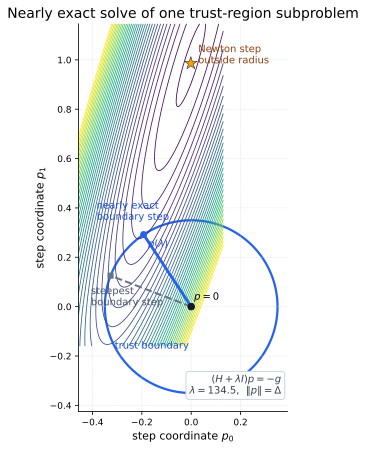
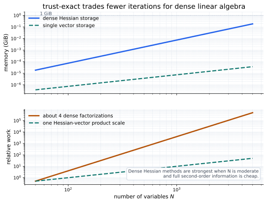
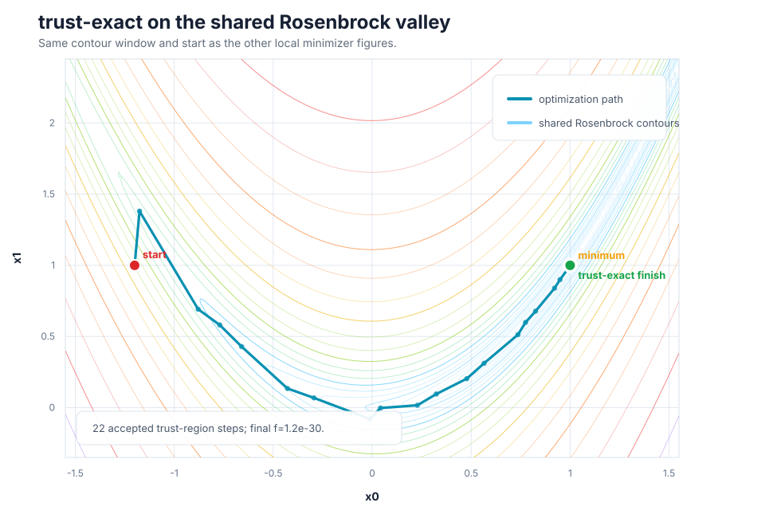

From Approximate To Nearly Exact
The trust-region pages all start with the same local model. At the current point \(x_k\), the gradient is \(g_k=\nabla f(x_k)\), the Hessian is \(H_k=\nabla^2 f(x_k)\), and \(p\) is a proposed step away from \(x_k\). The trust radius \(\Delta_k\) says how far the quadratic model is allowed to be trusted:
trust-ncg solves this subproblem approximately with truncated CG. trust-krylov solves it more accurately in a Krylov subspace. trust-exact takes the most direct dense route: solve the full trust-region subproblem nearly exactly.
The tempting shortcut is to say: if nearly exact is best, always use it. The catch is the Hessian. trust-exact needs the explicit dense matrix and repeatedly factors shifted versions of it. That can be a wonderful trade for medium-size problems, but it is the wrong shape for very large matrix-free problems.
Why A Shifted Newton Equation Appears
First imagine there were no trust radius and the Hessian were a positive-definite bowl. The model minimizer would be the ordinary Newton step:
If that step is inside the trust region, there is nothing more to fix. trust-exact can use the Newton step. The hard case is when the Newton step is outside the ball, or when the Hessian is not positive definite enough for the unconstrained model to have a safe minimizer.
The Tempting Shortcut
A natural idea is to compute the Newton step and clip it back to the boundary. That keeps the Newton direction but shortens it. The problem is that the best boundary point is not usually on the straight line from \(0\) to the unconstrained Newton step. The trust region asks for the best point anywhere in the ball, not just a shortened version of one direction.
The Extra Structure
trust-exact instead introduces a scalar shift \(\lambda_k\). For any chosen \(\lambda_k\), solve a shifted Newton equation:
The scalar \(\lambda_k\) has a job. Adding \(\lambda_k I\) makes the model curvature more positive and usually shortens the resulting step. When \(\lambda_k=0\), this is the ordinary Newton equation. As \(\lambda_k\) grows, the step becomes more conservative.
The selected shift must also make the shifted Hessian usable:
Meaning: the shift is not a random damping constant. It is the scalar that makes the dense quadratic subproblem obey the trust radius while keeping the shifted model convex enough to solve.
What Lambda Chooses
There are two possible outcomes. If the unshifted Newton step is already inside the trust region, the constraint is inactive and the shift should be zero. If the best model step wants to leave the trust region, the shift becomes positive and the step lands on the boundary.
That second line is the complementarity condition. It says the shift only does work when the radius is tight. Either \(\lambda_k=0\), or \(\|p_k\|=\Delta_k\). There is no reason to add damping while also leaving unused room inside the trust region.
In practice, trust-exact searches for the value of \(\lambda_k\) that makes the shifted solve land in the right place. This is why the method can be expensive: each trial shift may require dense linear algebra with \(H_k+\lambda I\).

The Dense Hessian Tradeoff
Newton-CG, trust-ncg, and trust-krylov can work with a function that only returns Hessian-vector products. trust-exact cannot. It needs the Hessian entries because the inner solve factors shifted dense matrices.
This does not make trust-exact "worse." It makes it specialized. If the problem has a few dozen or a few hundred variables and a reliable Hessian, a more accurate subproblem can reduce outer iterations. If the problem has many thousands of variables, storing and factoring the full Hessian often dominates everything else.

Watch It On Rosenbrock
On Rosenbrock, trust-exact uses an explicit Hessian. In two dimensions the full Hessian has these entries:
Read this differently from a Hessian-vector product. The whole matrix is being built and passed to the optimizer. That is exactly what lets trust-exact use dense factorizations inside the trust-region solve.


Use trust-exact In SciPy
In SciPy, use method="trust-exact". Provide
jac and hess. This method does not support
a Hessian-vector-product-only interface because the algorithm needs
dense matrix factorizations.
import numpy as np
from scipy.optimize import minimize
def rosen(x):
return np.sum(100.0 * (x[1:] - x[:-1]**2.0)**2.0 + (1 - x[:-1])**2.0)
def rosen_der(x):
der = np.zeros_like(x)
der[1:-1] = (
200 * (x[1:-1] - x[:-2]**2)
- 400 * x[1:-1] * (x[2:] - x[1:-1]**2)
- 2 * (1 - x[1:-1])
)
der[0] = -400 * x[0] * (x[1] - x[0]**2) - 2 * (1 - x[0])
der[-1] = 200 * (x[-1] - x[-2]**2)
return der
def rosen_hess(x):
x = np.asarray(x)
hess = np.diag(-400 * x[:-1], 1) - np.diag(400 * x[:-1], -1)
diagonal = np.zeros_like(x)
diagonal[0] = 1200 * x[0]**2 - 400 * x[1] + 2
diagonal[-1] = 200
diagonal[1:-1] = 202 + 1200 * x[1:-1]**2 - 400 * x[2:]
return hess + np.diag(diagonal)
x0 = np.array([1.3, 0.7, 0.8, 1.9, 1.2])
result = minimize(
rosen,
x0,
method="trust-exact",
jac=rosen_der,
hess=rosen_hess,
options={"gtol": 1e-8, "disp": True},
)
print(result.x)
print(result.fun)
print(result.success, result.message)
The important difference from the previous two pages is the
hess argument. Here rosen_hess(x) returns
the whole matrix, not a product \(H(x)p\).
When To Use It
| Use trust-exact when | Prefer another method when |
|---|---|
| The problem is smooth, unconstrained, and medium-sized. | The problem has thousands of variables; matrix-free Newton-CG or trust-krylov is usually a better fit. |
| You can compute, store, and factor a reliable full Hessian. | You only have function values or gradients; Nelder-Mead or BFGS matches that information level better. |
| Reducing outer iterations matters more than avoiding dense factorizations. | The Hessian is sparse or structured enough that Hessian-vector products are much cheaper. |
| You want a nearly exact trust-region subproblem solve for difficult curvature. | The extra subproblem accuracy is not paying for itself; trust-ncg or trust-krylov may be cheaper overall. |